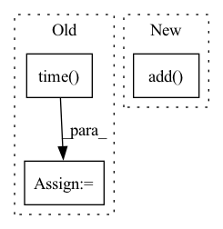

Pattern ID :2952

Before Change
self.reset()
def reset(self) -> None:
self.start_time = time.time()
net = psutil.net_io_counters()
self.start_sent = net.bytes_sent
self.start_recv = net.bytes_recv
After Change
def reset(self) -> None:
// Discard initial batch that is meaningless
net = psutil.net_io_counters()
self.sent_throughput.add(net.bytes_sent, batch_idx=0)
self.recv_throughput.add(net.bytes_recv, batch_idx=0)
def measure(self, batch_idx: int) -> Tuple[Measurement, Measurement]:
net = psutil.net_io_counters()
In pattern: SUPERPATTERN
Frequency: 3
Non-data size: 3
Instances
Fragment ID: 11416966
Project Name: determined-ai/determined
Commit Name: 5b73278f933023b815a7beb08ca3acb773d306cf
Time: 2021-06-02
Author: armandmcqueen@users.noreply.github.com
File Name: harness/determined/profiler.py
M Class Name: NetThroughputCollector
N Class Name: NetThroughputCollector
M Method Name: reset(1)
N Method Name: reset(1)
M Parent Class:
N Parent Class:
M File Name: harness/determined/profiler.py
N File Name: harness/determined/profiler.py
M Start Line: 805
M End Line: 808
N Start Line: 827
N End Line: 829
'>
Before Change
def measure(self, batch_idx: int) -> Tuple[Measurement, Measurement]:
net = psutil.net_io_counters()
end_time = time.time()
delta_sent_bytes = net.bytes_sent - self.start_sent
delta_recv_bytes = net.bytes_recv - self.start_recv
time_delta = end_time - self.start_time
self.start_time = end_time
self.start_sent = net.bytes_sent
self.start_recv = net.bytes_recv
sent_throughput_bytes_per_second = delta_sent_bytes / time_delta
recv_throughput_bytes_per_second = delta_recv_bytes / time_delta
sent_throughput_gigabits_per_second = sent_throughput_bytes_per_second * 8 / GIGA
recv_throughput_gigabits_per_second = recv_throughput_bytes_per_second * 8 / GIGA
timestamp = datetime.fromtimestamp(end_time, timezone.utc)
return Measurement(timestamp, batch_idx, sent_throughput_gigabits_per_second), Measurement(
After Change
def measure(self, batch_idx: int) -> Tuple[Measurement, Measurement]:
net = psutil.net_io_counters()
sent = self.sent_throughput.add(net.bytes_sent, batch_idx=batch_idx)
recv = self.recv_throughput.add(net.bytes_recv, batch_idx=batch_idx)
return sent, recv
'>
Fragment ID: 11416964
Project Name: determined-ai/determined
Commit Name: 5b73278f933023b815a7beb08ca3acb773d306cf
Time: 2021-06-02
Author: armandmcqueen@users.noreply.github.com
File Name: harness/determined/profiler.py
M Class Name: NetThroughputCollector
N Class Name: NetThroughputCollector
M Method Name: measure(2)
N Method Name: measure(2)
M Parent Class:
N Parent Class:
M File Name: harness/determined/profiler.py
N File Name: harness/determined/profiler.py
M Start Line: 811
M End Line: 832
N Start Line: 832
N End Line: 835
'>
Before Change
self.reset()
def reset(self) -> None:
self.start_time = time.time()
disk = psutil.disk_io_counters()
self.start_read_bytes = disk.read_bytes
self.start_write_bytes = disk.write_bytes
After Change
def reset(self) -> None:
// Discard initial batch that is meaningless
disk = psutil.disk_io_counters()
self.read_throughput_tracker.add(disk.read_bytes, batch_idx=0)
self.write_throughput_tracker.add(disk.write_bytes, batch_idx=0)
self.iops.add(disk.read_count + disk.write_count, batch_idx=0)
def measure(self, batch_idx: int) -> Tuple[Measurement, Measurement, Measurement]:
'>
Fragment ID: 11416965
Project Name: determined-ai/determined
Commit Name: 5b73278f933023b815a7beb08ca3acb773d306cf
Time: 2021-06-02
Author: armandmcqueen@users.noreply.github.com
File Name: harness/determined/profiler.py
M Class Name: DiskReadWriteRateCollector
N Class Name: DiskReadWriteRateCollector
M Method Name: reset(1)
N Method Name: reset(1)
M Parent Class:
N Parent Class:
M File Name: harness/determined/profiler.py
N File Name: harness/determined/profiler.py
M Start Line: 840
M End Line: 847
N Start Line: 846
N End Line: 849